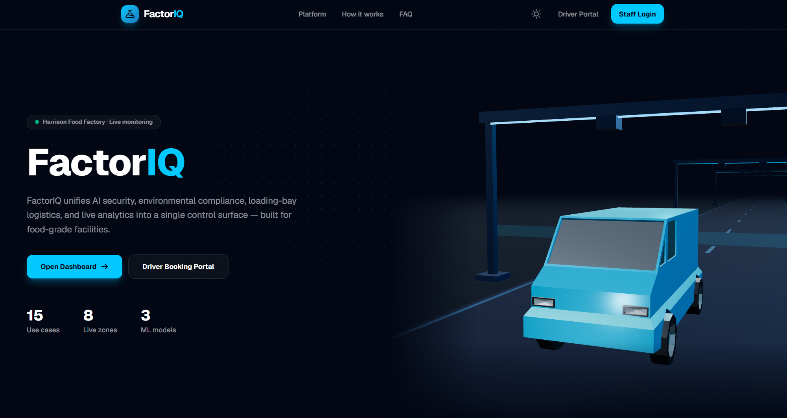

FactorIQ
As an AI & Cloud Engineer on this project, I architected the Facility Module — driving smart monitoring, compliance tracking, and automated environmental alerts.
Client
Developer
Module
Scikit-Learn

Smarter Operations.
Automated Compliance.
FactorIQ is a comprehensive facility management platform that modernises daily operations for manufacturing plants. The system tackles manual monitoring, loading bay congestion, and a lack of integrated AI tracking. Through automated anomaly detection, live spatial views, and real-time alerts, it enhances tenant experience and drastically reduces security and compliance risks.
Technology Stack
The core technologies I utilised to engineer the Facility Module.
Powered the computer vision pipelines to automatically process camera frames. Used pre-trained and fine-tuned models to identify pest presence and hygiene violations, drawing precise bounding boxes over incidents.
Built regression models (SGDRegressor) to analyze historical sensor data. This allowed the system to forecast environmental threshold breaches before they occurred and trigger pre-emptive alerts.
Engineered highly scalable Firestore schemas to ingest millions of real-time sensor readings. Utilised automated TTL (Time-To-Live) policies for lifecycle management to maintain fast query performance.
Acted as the full-stack React framework for building the centralized Command Hub. Leveraged its robust routing and server-side capabilities to deliver a fast, SEO-friendly, and highly interactive user interface.
Served as the core language for all machine learning microservices. Handled data preprocessing pipelines, Scikit-learn model training, and API integrations with Vertex AI endpoints.
Ensured type safety across the Next.js frontend application. Created strict interfaces for API responses, sensor data models, and incident reports to drastically reduce runtime errors.
Leveraged the latest React 19 features to build highly reusable, stateful components. Managed complex dashboard interactions and real-time data visualisations seamlessly without performance bottlenecks.
Streamlined the styling process with utility-first CSS classes. Enabled rapid UI iteration and ensured consistent, responsive design across all devices and screen sizes.
Integrated with the backend workflow engines to route critical predictive alerts and unacknowledged hygiene incidents instantly to facility managers' mobile devices for rapid resolution.
Technical Toolkit
A comprehensive overview of the skills and responsibilities I handled during this project.
My Responsibilities
Key Technical Skills
Project Journey
A structured walkthrough of the Facility Module and its core capabilities.
The Problem Statement
The client faced immense challenges in manually monitoring 10-30 entry points across the facility footprint, resulting in unsustainable manpower costs and inefficient shift planning. Furthermore, a complete lack of integrated AI systems meant there was no automated way to instantly detect compliance issues, log hygiene data, track dynamic environments, or escalate critical safety alerts to management before they escalated.
Asset & Manpower
Heavy reliance on physical patrols and shift workers to ensure security and compliance across numerous facility zones.
Lack of AI Monitoring
No central automated system to log hygiene, detect anomalies, or forecast environmental threshold breaches.
Client Expectations
To solve these critical bottlenecks, the client required a robust, unified ecosystem that could deliver AI-driven safety protocols, seamless environmental tracking, and significantly less manual monitoring. The goal was to drastically cut down reaction times and allow staff to focus on higher-value operational work instead of endless patrolling.
Environment & Logistics
Monitor environmental conditions continuously while tracking operations across the entire facility footprint.
AI Safety & Compliance
Use automated algorithms to spot security and hygiene issues without manual intervention.
The Facility Module Solution
I architected the Facility Module, engineering core capabilities for an end-to-end Command Hub spanning environmental monitoring, predictive alerts, and AI-driven compliance tracking backed by robust Firestore NoSQL data schemas.
Real-Time Data & TTL
Engineered highly scalable Firestore structures to ingest millions of sensor readings, using automated TTL (Time-To-Live) policies for lifecycle management without performance hits.
ML Predictive Alerts
Built an ML service using Scikit-learn (SGDRegressor) that analyses sensor history to accurately forecast upcoming threshold breaches and trigger pre-emptive alerts directly to staff via Telegram notifications.
Vision AI Detections
Integrated Vertex AI endpoints to process camera frames, automatically identifying pest presence and hygiene violations with precise bounding boxes to instantly spawn traceable incidents. Facility managers can also seamlessly export these pest, hygiene, and HACCP logs as PDF or CSV files for compliance audits.
Automated Escalation
Developed SLA-based workflow engines (like GlobalPestEscalator) that route unacknowledged or frequent incidents directly to admins via Telegram. All escalated predictive alerts and pest/hygiene incidents are also integrated into a centralized admin page for high-level visibility.
Client Feedback & System Enhancements
Client feedback was incorporated throughout the development cycle to ensure FactorIQ addressed real operational needs, improved usability, and aligned perfectly with the client's day-to-day workflows.
Key Takeaway
Through continuous iterations—such as improving AI validation mechanisms to minimise false positives and retaining notification toasts for better visibility—we delivered a highly polished, production-ready system.